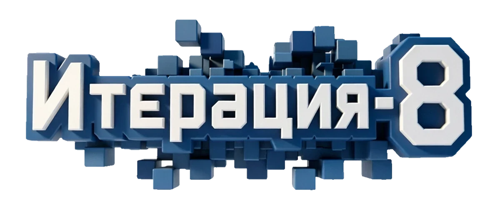
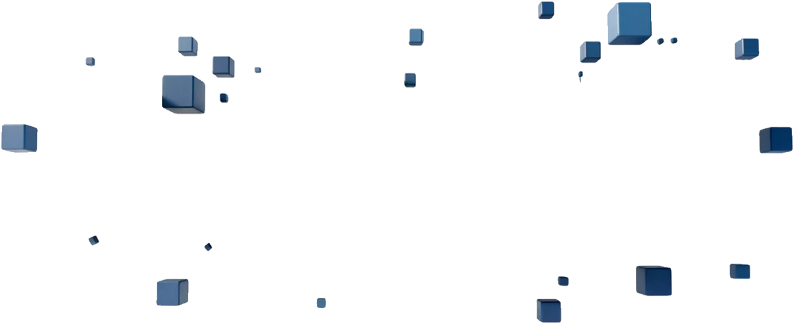
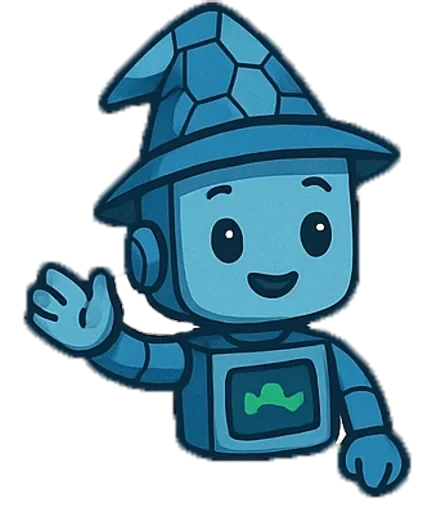

ГПО для школьников · ТУСУР
Процедурная генерация игрового контента
Добро пожаловать! На этом сайте ты всегда можешь посмотреть материалы по курсу, расписание, команды, проекты и интерактивные приложения, которые помогут тебе освоить процедурные алгоритмы.
Расписание
Актуальное расписание занятий
Проекты и команды
Кто над чем работает в этой итерации.
Учебные материалы
Книги, статьи, презентации и записи лекций.
Приложения
Интерактивные приложения, демонстрации алгоритмов и мини-игры